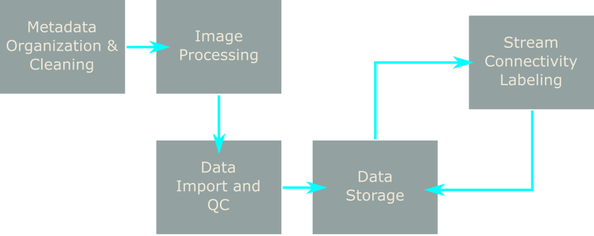

Computational Methods for Image Based Stream Connectivity Classification
Timothy Becker1, Mary Becker2, Christopher Bellucci2, Melissa Czarnowski2, Corinne Fitting2 Alexandria Hibbard2, Nicholas Muise1,*, Joseph Spada1,*, Xuan Thu Dao1,+
- Department of Computing Sciences, University of Hartford, West Hartford CT
- CT Dept. of Energy and Environmental Protection, Hartford CT
* Image Database
+ Interactive Image Viewer
NAB 2020, 2022 extended Talk
Stream Connectivity
Method
Stream Connectivity Categories
Stream Connectivity Metrics
Monitoring Stream Connectivity with Trail Cameras
The Problem With A Growing Dataset
‘Conducting research is a bit like parenting. Raising a child involves a lot of cleaning and tidying, setting standards, and maintaining order, all of which goes completely unnoticed and for which the parent receives absolutely no credit.
Similarly, producing a bright, shiny result from the raw beginnings of a research project involves a lot of work that is almost never seen or acknowledged.’
-Paul Murrell ‘Introduction to Data Technologies’ (Emphasis Added)
Data Management Issues
Data Workflow

Standardizing Metadata*
Capturing and Organizing Data*
Data Import and Quality Checks*
Interactive Web Label Viewer (1)+
Interactive Web Label Viewer (2)+
General Stream Image Classification Problem (1)
General Stream Image Classification Problem (2)
Deep Convolutional Neural Networks (DCNN)
DCNN (2)
DCNN (3)
Image Processing: Resizing
Image Processing: Filtering

Image Processing: Enhancement
m-class training: Partitioning
m-class training: Balancing
m-class training: Datasets
class training: 2-class f1 = 0.90 / 0.50 (2017-2019 data)1
- versus 0.60 /0.5 2-class f1 using no image filtering and enhancement on 2017-2018 data
class training: 6-class f1 = 0.36 / 0.17 (2017-2019 data)1

- versus 0.18 /0.17 6-class f1 using no image filtering and enhancement on 2017-2018 data
Science for Environmental Management
Acknowledgments
Questions/Comments ?